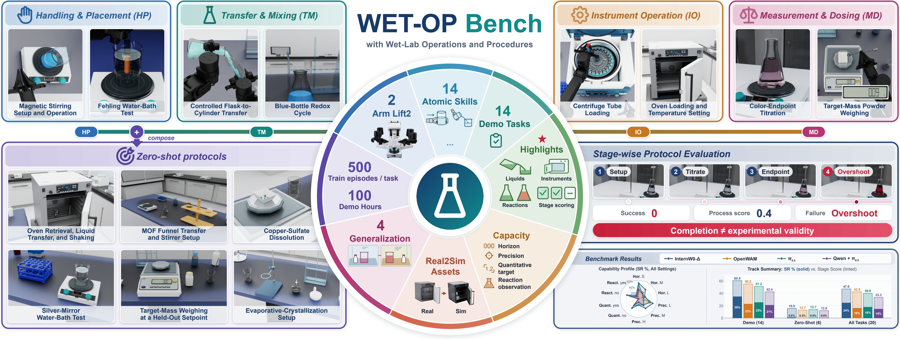

Beyond Motion Execution: Benchmarking Embodied Agents on Wet-Lab Operations and Procedures

Benchmark at a Glance
Key features
Dynamic liquid transfer
Pouring moves simulated liquid between vessels. Metrics check how much reaches the target and how much is retained, such as ≥80% transferred or ≥95% kept in the beaker.
Instruments and readouts
The centrifuge, drying oven, burette and analytical balance respond to buttons, doors, knobs and stopcocks. The balance shows a mass readout, and two tasks require reaching a target mass.
Reaction observation
Appearance changes with the procedure. Five tasks require observing the result, such as a pale-pink titration endpoint, the blue-bottle color cycle, a brick-red precipitate or a silver mirror.
Skill-aligned stage scores
Each episode receives binary success and a stage-wise score whose metrics are tagged with atomic skills, so partial progress and the point of failure stay visible.
Two generalization tests
Demonstrated tasks are tested under task-configuration, background and instruction shifts, one at a time and mixed. Six zero-shot tasks have no demonstrations and test new operation compositions and experimental conditions.
Dual-arm robot, real-to-sim assets
All tasks use the dual-arm Lift2 robot. Laboratory assets come from Lab2Sim, an agentic pipeline that builds them from object specifications and admits them only after geometry, articulation and physics checks.
What is WET-OP-Bench?
WET-OP-Bench is a dual-arm simulation benchmark of 20 wet-lab tasks. In a laboratory, completing the right motions is not enough: an agent can still spill a reagent, miss a target mass, or overshoot a titration endpoint. The simulator therefore couples manipulation with evolving experimental states, including dynamic liquid transfer, quantitative instrument readouts, and procedure-conditioned color changes, and the same states drive both what the agent observes and how success is checked. Tasks are built from a shared set of atomic manipulation skills and range from basic operations to multi-step experimental procedures. Fourteen tasks come with demonstrations and are tested under controlled task-configuration, background, and instruction variations; the other six have no demonstrations and test zero-shot generalization to new operation compositions and experimental conditions. Every episode is scored by binary success and by a stage-wise score whose metrics are aligned with atomic skills, so partial progress and failures remain visible.
Overview of the 20-Task Benchmark
| ID | Family | Task | Scope | Horizon | Precision | Q | R | Distinctive skills |
|---|
- Family
- HP: Handling & Placement, TM: Transfer & Mixing, IO: Instrument Operation, MD: Measurement & Dosing. Tasks that combine two families show both, such as IO + TM.
- Scope
- Op.: basic operation, Proc.: experimental procedure.
- Horizon
- Number of atomic-skill steps. Short: 1–5 steps, Medium: 6–10 steps, Long: more than 10 steps.
- Precision
- Required positional accuracy. Low: tolerance above 2 cm, Medium: above 5 mm and up to 2 cm, High: 5 mm or less.
- Q
- Quantitative-target requirement. Yes: success requires reaching a specified quantitative target rather than merely obtaining a numerical readout, No: no quantitative target.
- R
- Reaction-observation requirement. Yes: success requires observing a reaction-induced visual state (a titration endpoint, precipitate formation or color change), No: no reaction observation.
- Distinctive skills
- Representative atomic skills of each task. Every skill a task uses is listed in its metrics under Task showcase.
Task Showcases
20 tasksDemonstrated Tasks
Zero-shot Tasks
No matching tasks
Select more options in one of the filters.
Details
Training data and evaluation settings are built from three variation dimensions. Demonstrated tasks test within-task generalization; zero-shot tasks test cross-task generalization.
| Task split | Data | Construction | Test setting | Episodes per task | Generalization |
|---|---|---|---|---|---|
| Demonstrated Tasks 01–14 | Train | 500 demonstrations per task. Every episode combines a task-configuration, a background and an instruction variant. | — | 500 | — |
| Test | Same tasks, objectives and operation structure as in training. | C-only, B-only, I-only and Mixed (C+B+I), 10 episodes each | 40 | Within-task: robustness to controlled physical, visual and language variation | |
| Zero-shot Tasks 15–20 | Test | No task-specific demonstrations. Operation families and atomic skills also appear in the demonstrated tasks. | Mixed (C+B+I) | 20 | Cross-task: new operation compositions and/or experimental conditions |
- Task configuration (C)
- 50 variants per taskTask-relevant physical or experimental parameters: object positions, liquid amount or color where applicable, and the duration of time-dependent steps.
- Background (B)
- 10 variants per taskTask-irrelevant visual context: tabletop appearance, room background and illumination.
- Instruction (I)
- 20 variants per taskThe level of descriptive detail in the language instruction, with the same task semantics. Task cards show the canonical instruction, which states the scored requirements, including intermediate transfers, opposite-slot centrifuge loading, and the final upright reset.
Training episodes vary C, B and I jointly. In the test settings, C-only, B-only and I-only each shift one dimension in isolation, and Mixed (C+B+I) varies all three jointly; task identity, objective and operation structure stay the same as in training. Zero-shot tasks are evaluated only under Mixed (C+B+I).
Results
Task success stays below the stage score for every model. On the 14 demonstrated tasks, InternW0-Δ reaches 34.6 ± 1.1% success and a stage score of 60.5 ± 1.0, ahead of π0.5 (25.2 ± 1.4% and 51.2 ± 0.4), OpenWAM (22.7 ± 0.5% and 55.2 ± 0.5), and Qwen+π0.5 (20.8% and 42.4). Across all 20 tasks, InternW0-Δ reaches 24.5 ± 0.9% and 47.0 ± 0.8, compared with 17.6 ± 1.0% and 39.9 ± 0.3 for π0.5, 16.0 ± 0.3% and 42.5 ± 0.4 for OpenWAM, and 14.6% and 33.3 for Qwen+π0.5.
| Model | HP (3) | TM (4) | IO (4) | MD (3) | Demo (14) | Zero-shot (6) | All (20) | |||||||
|---|---|---|---|---|---|---|---|---|---|---|---|---|---|---|
| SR | Score | SR | Score | SR | Score | SR | Score | SR | Score | SR | Score | SR | Score | |
| π0.5 | 47.2 | 67.0 | 4.2 | 23.5 | 32.9 | 75.5 | 20.8 | 39.9 | 25.2 | 51.2 | 0.0 | 13.7 | 17.6 | 39.9 |
| OpenWAM | 51.1 | 65.5 | 7.5 | 42.7 | 25.4 | 76.1 | 10.8 | 33.8 | 22.7 | 55.2 | 0.3 | 12.7 | 16.0 | 42.5 |
| InternW0-Δ | 55.3 | 65.8 | 21.0 | 50.8 | 42.1 | 83.5 | 21.9 | 37.3 | 34.6 | 60.5 | 0.8 | 15.5 | 24.5 | 47.0 |
| Qwen+π0.5 | 39.3 | 58.0 | 1.9 | 15.1 | 26.9 | 59.5 | 19.4 | 40.6 | 20.8 | 42.4 | 0.0 | 12.0 | 14.6 | 33.3 |
Success rate (SR, %) and stage score (0–100). Demonstrated columns pool C-only, B-only, I-only, and Mixed, with 40 episodes per task per run. All (20) is the task-balanced mean. π0.5, OpenWAM, and InternW0-Δ are each fine-tuned for 100k steps on the 14 demonstrated tasks, with global batch size 256, and the headline ± values are the standard deviation over three runs of 680 episodes. Qwen+π0.5 is Qwen3.8-Flash planning over frozen π0.5, with task memory and in-context demonstrations turned off; its numbers are one run of 246 completed episodes and have no standard deviation. Bold marks the best value in a column.
Within-task generalization and zero-shot transfer
| Split / setting | InternW0-Δ | OpenWAM | π0.5 | Qwen+π0.5 |
|---|---|---|---|---|
| C-only (demo) | 34.3 / 60.7 | 22.6 / 54.9 | 24.0 / 50.0 | — / — |
| B-only (demo) | 33.1 / 58.7 | 24.5 / 56.2 | 28.6 / 54.0 | 27.4 / 45.3 |
| I-only (demo) | 35.2 / 61.0 | 23.3 / 56.4 | 23.8 / 49.8 | — / — |
| Mixed (demo) | 35.7 / 61.4 | 20.2 / 53.4 | 24.3 / 50.9 | 19.0 / 41.6 |
| All demo settings | 34.6 / 60.5 | 22.7 / 55.2 | 25.2 / 51.2 | 20.8 / 42.4 |
| Zero-shot (6 tasks) | 0.8 / 15.5 | 0.3 / 12.7 | 0.0 / 13.7 | 0.0 / 12.0 |
Cells are success rate (%) / stage score (0–100). Qwen+π0.5 has no C-only or I-only episodes in the completed run. On the six held-out tasks every model stays below 1% success. Partial stage credit comes mainly from opening steps that match a demonstrated operation.